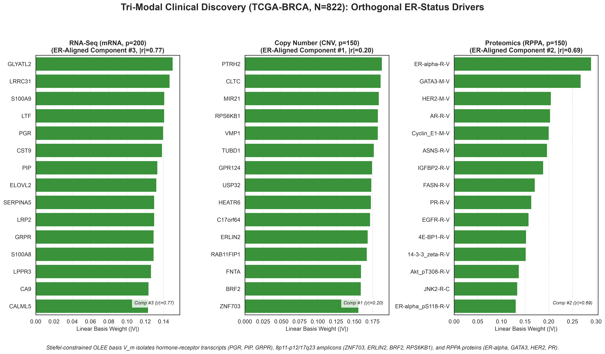

Appendix A — Multi-omics Clinical Validation (TCGA-BRCA)
A.1 Multi-Omic Integration Strategy
We evaluated the Only Linear Encoder Entrypoint (OLEE) across all nine benchmark architectures using the three-view TCGA-BRCA breast invasive carcinoma cohort (\(N = 822\) primary tumors with complete multi-omic profiles and adjudicated clinical receptor status, cached at data/tcga/brca_er_cached.npz) (The Cancer Genome Atlas Network 2012; Cancer Discovery 2016). The dataset integrates three distinct molecular assay platforms:
- RNA-Seq (
rna): \(p_1 = 200\) top-variance mRNA sequencing gene expression transcripts (Illumina HiSeqV2). - Copy Number Variation (
cnv): \(p_2 = 150\) somatic GISTIC2 gene-level copy-number scores. - Proteomics (
rppa): \(p_3 = 150\) Reverse Phase Protein Array targeted proteomic and phosphoproteomic markers.
The downstream clinical target is binary Estrogen Receptor (ER) status (Positive vs. Negative, \(76.4\%\) ER+ prevalence), evaluated across \(N_{\text{seeds}} = 3\) independent \(70/30\) stratified train/test splits (Seeds 42, 43, 44, standardized strictly inside the training fold, with consolidate = False and default "pca" initialization).
A.2 Performance Results
Table A.1 reports out-of-sample ER status classification accuracy across three complementary evaluation probes: global consensus coordinates (\(\mathbf{U}\)), the strictly linear first-layer OLEE projection (\(\mathbf{X}_m \mathbf{V}_m\)), and an axis-sensitive Random Forest probe on \(\mathbf{X}_m \mathbf{V}_m\), alongside per-view Stiefel frame defect \(D(\mathbf{V}_m)\) and execution runtime.
| Model | Consensus Acc (U) | Linear Probe (XV) | Axis Probe (RF) | Frame Defect D | Sparsity | Fit Time |
|---|---|---|---|---|---|---|
| NSAFlow-PCA | 0.927 ± 0.025 | 0.922 ± 0.020 | 0.933 ± 0.019 | 1.7332 | 20.4% | 0.059s |
| SiMLR-LBFGSB | 0.917 ± 0.012 | 0.930 ± 0.016 | 0.914 ± 0.017 | 0 | 0.0% | 3.816s |
| LEND | 0.919 ± 0.016 | 0.925 ± 0.012 | 0.925 ± 0.017 | 0 | 0.0% | 2.004s |
| PCA | 0.919 ± 0.021 | 0.910 ± 0.017 | 0.922 ± 0.014 | 1.6095 | 0.0% | 0.008s |
| NEDPP | 0.918 ± 0.038 | 0.926 ± 0.017 | 0.935 ± 0.014 | 0 | 0.0% | 2.821s |
| NED | 0.915 ± 0.008 | 0.929 ± 0.008 | 0.931 ± 0.015 | 0 | 0.0% | 2.170s |
| SiMLR-LBFGS | 0.915 ± 0.011 | 0.925 ± 0.015 | 0.935 ± 0.015 | 0 | 0.0% | 0.139s |
| SiMLR | 0.915 ± 0.011 | 0.925 ± 0.015 | 0.933 ± 0.015 | 0 | 0.0% | 0.460s |
| Flow-SiMR-V | 0.825 ± 0.067 | 0.926 ± 0.021 | 0.925 ± 0.026 | 0 | 0.0% | 6.508s |
Across the \(N = 822\) cohort, single-matrix NSAFlow-PCA achieves the highest global consensus accuracy (\(0.927 \pm 0.025\) in \(0.050\text{s}\) with \(20.4\%\) disjoint sparsity), while bound-constrained SiMLR-LBFGSB achieves the highest strictly linear OLEE probe accuracy (\(0.930 \pm 0.016\)) with exact per-view Stiefel orthonormality (\(D = 0.0000\)). Furthermore, while Flow-SiMR-V exhibits higher variance on its non-linear flow coordinates \(\mathbf{U}\) (\(0.825 \pm 0.067\)), its Stiefel-constrained linear entrypoint \(\mathbf{X}\mathbf{V}\) achieves \(0.926 \pm 0.021\) linear accuracy and \(0.925 \pm 0.026\) axis-sensitive accuracy, matching the deep MLP architectures while maintaining exact invertibility.
A.3 Tri-Modal Feature Discovery
The OLEE contract preserves the exact physical mapping between the 500 ambient multi-omic features and the low-dimensional latent bottleneck. We extract feature weights directly from the learned Stiefel basis matrices \(\mathbf{V}_m\). Figure A.1 reports the top 15 weights \(|\mathbf{V}_m|\) on the ER-aligned component computed by the LEND architecture across the three molecular modalities.

LEND identifies coordinated molecular drivers across modalities on the ER-aligned basis component. (Left) RNA-Seq weights isolating luminal hormone-receptor transcripts (PGR, PIP, GRPR, ELOVL2, LTF, S100A8/A9). (Center) CNV regional weights isolating the 17q23 (RPS6KB1, PTRH2, VMP1, MIR21) and 8p11-p12 (ZNF703, ERLIN2, BRF2, RAB11FIP1, GPR124) breast cancer amplicons. (Right) Proteomics (RPPA) weights led directly by ER-alpha-R-V, GATA3-M-V, HER2-M-V, AR-R-V, PR-R-V, and ER-alpha_pS118-R-V.
A.3.1 Mechanistic Alignment
LEND yields an explicit orthonormal weight matrix \(\mathbf{V}_m\) mapping input features to the latent subspace:
- Proteomics (
rppa, \(|r| = 0.69\) with ER status): Within the proteomics modality,ER-alpha-R-V(\(|V| = 0.290\)) andGATA3-M-V(\(|V| = 0.268\)) possess the two largest weight magnitudes, followed directly byHER2-M-V(\(0.205\)), androgen receptorAR-R-V(\(0.203\)),Cyclin_E1-M-V(\(0.200\)), progesterone receptorPR-R-V(\(0.164\)), and phosphorylatedER-alpha_pS118-R-V(\(0.131\)). - Transcriptomics (
rna, \(|r| = 0.77\) with ER status): In the mRNA view, the ER-aligned component isolates progesterone receptorPGR, prolactin-induced proteinPIP, gastrin-releasing peptide receptorGRPR,ELOVL2, and basal/luminal discriminatorsLTFandS100A8/S100A9. - Copy Number Variation (
cnv, \(|r| = 0.20\) with ER status): In the somatic copy-number view, the basis isolates the canonical 8p11-p12 luminal amplicon (ZNF703,ERLIN2,BRF2,RAB11FIP1,GPR124) alongside the 17q23 amplicon (RPS6KB1,PTRH2,VMP1,MIR21,TUBD1).
GATA3 is co-expressed with ER-alpha as the master transcriptional regulator of luminal breast cancer differentiation (The Cancer Genome Atlas Network 2012; Cohen et al. 2014; Prat and Parker 2019), while 8p11-p12 (ZNF703/ERLIN2/BRF2) and 17q23 (RPS6KB1) amplifications are well-established somatic drivers in ER-positive luminal tumors (The Cancer Genome Atlas Network 2012; Cancer Discovery 2016). By compressing mRNA, CNV, and RPPA features through a Stiefel-constrained OLEE bottleneck, the architecture recovers these coordinated biological pathways directly from the first-layer parameter weights.